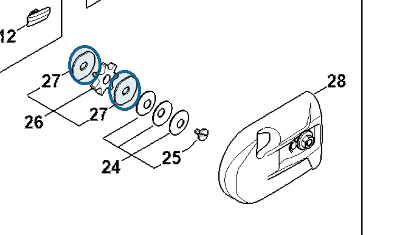

Washer
4182 162 8900
HT 135 — gear head
Washers on either side of chain sprocket 0000 640 2003 (item 26).
Item 27 Qty listed: 2

HT 135-Z spare-parts list, 10/28/2024. Drawing p. 17; parts table p. 18.
4182 162 8900
Washers on either side of chain sprocket 0000 640 2003 (item 26).
Item 27 Qty listed: 2

HT 135-Z spare-parts list, 10/28/2024. Drawing p. 17; parts table p. 18.